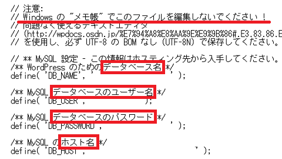

WordPressの引越方法
既存のWordPressを違うレンタルサーバーに引越する際、まずはFTP接続でWordPress関連のファイルを全てダウンロードしておきます。
パソコン上に適当なフォルダを作成し、そちらにダウンロードしておくとよいでしょう。
静的なホームページの場合、ダウンロードしたHTMLファイルやCSSを新サーバーにアップロードすれば完了しますが、WordPressは動的なサイトのため、データベースのなかに記事などの情報が入っています。
そのため、データベースもダウンロードする必要があります。

このデータベースについては、エックスサーバーの場合、「MySQL」バックアップの箇所から簡単にダウンロードできます。もしくは「phpMyAdmin」からデータベースを選択してエクスポートしてもよいかと思います。
あとは、ダウンロードしたWordPress関連のファイルを引越先の新サーバーにアップロードし、データベースもインポートしたのち、ドメインのネームサーバーを変更すれば完了です。
ただし、このダウンロードしたファイルのうち、「wp-config.php」のファイルにはデータベースに接続するための旧レンタルサーバー側の情報が記載されています。
そのため、この「wp-config.php」ファイルの内容を、引越先の新しいサーバーのデータベース情報に書き換えてからアップロードする必要があります。
引越先レンタルサーバーでの設定手順
上記のように、アップロードする前に「wp-config.php」の内容を引越先の情報に書き換える必要があるため、まずは引越先でドメインの設定やデータベースの作成を済ませておきましょう。
ここでは、ロリポップ！に引越する場合を例にご紹介します。
■ドメインの設定
まずはドメインの設定をしておきます。ネームサーバーを変更するまでは切り替わりませんが、ファイルのアップロードをする必要があるため、事前に設定しておきましょう。
ここで表示されている切り替え先のネームサーバーの情報は後ほど使いますので、メモしておくことをおすすめします。
■データベースの作成
次に、引越先でデータベースも作成しておきます。
こちらの情報にて、上記の「wp-config.php」のファイルを書き換えます。

最近のメモ帳はUTF-8Nでも保存される気がしますが、言われたことを守って、何らかのテキストエディタを使用することをおすすめします。
例えば、「データベース名」については以下のように書き変えていきます。
define( 'DB_NAME', 'ロリポップで作成したデータベース名' );
書き変えたら保存して、新サーバーへアップロードしましょう。
■データベースのインストール
WordPress関連のファイルをアップロードしましたら、次にダウンロードしたデータベースをインストールします。
「データベース」 → 「操作」 → 「phpMyAdminを開く」の箇所からログインしますが、このページが残ったまま違うタブで開くはずですので、こちらの情報をコピペしてログインすればよいと思います。

コピペする際、半角スペースの空白が入ってしまう場合もあるので、よく確認することをおすすめします。
ログイン後、「インポート」のタブの左サイドバーから該当するデータベースを選択すると、「データベースほにゃららへのインポート」と表示されるはずです。
あとは、パソコン上のデータベースのファイルを選択してインポートすればよいでしょう。
■ネームサーバーの変更
最終的に、新サーバーのネームサーバーに変更したのち、無料SSLの設定などもしておくことをおすすめします。数日中には切り替わるはずですが、もし何らかの事情で失敗した場合、元のネームサーバーに戻せば以前のままでサイトは表示されます。
正常に移転が完了して問題がないことを確認したのち、旧レンタルサーバー側の情報を削除するとよいでしょう。